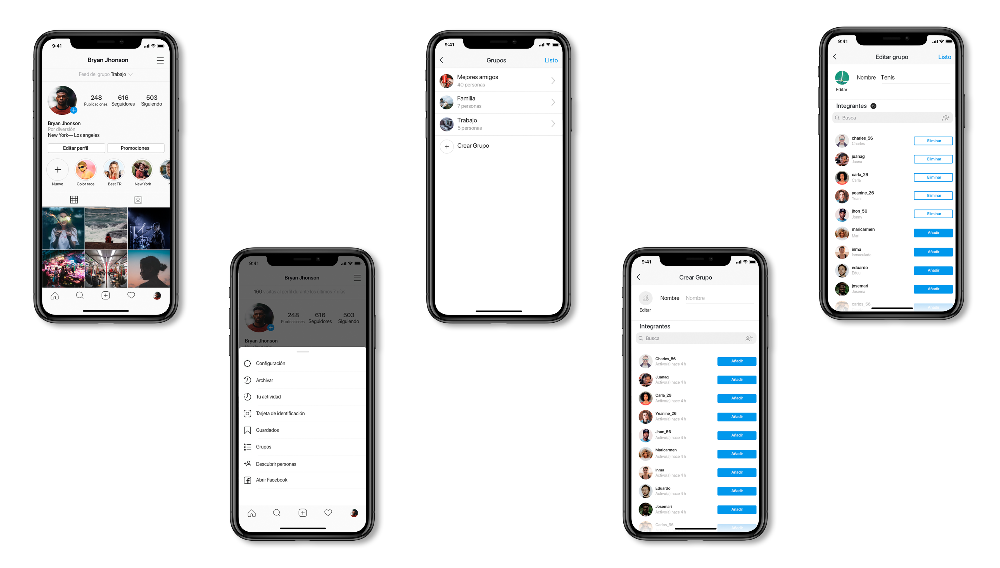
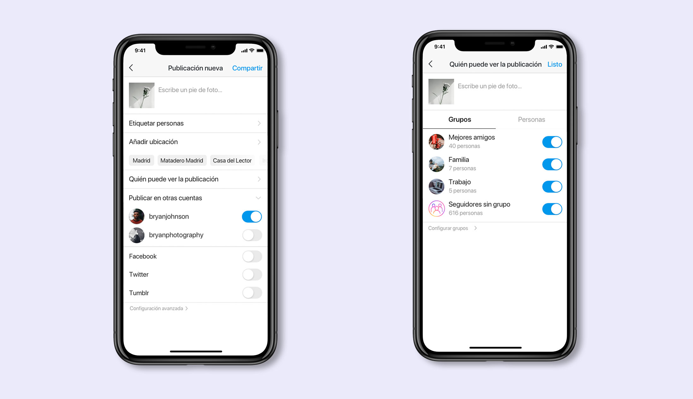
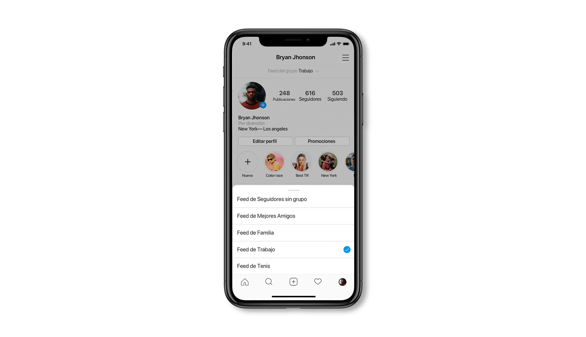
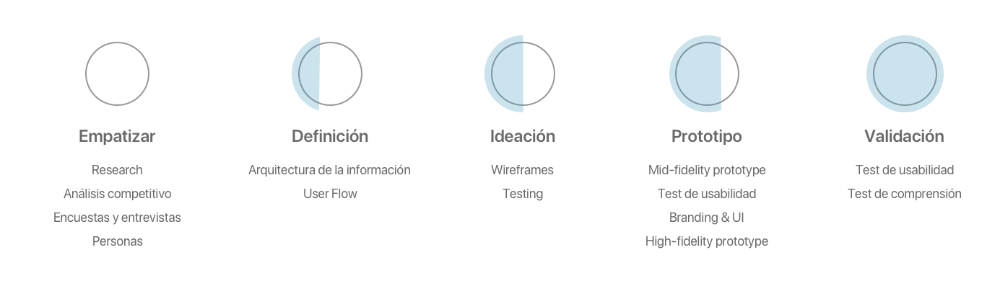

<!DOCTYPE html>
<html lang="en"></html>

<head>
    <meta charset="utf-8" />
    <title>Instagram: nueva funcionalidad | Alba Lozano</title>
    <meta content="Instagram: nueva funcionalidad | Alba Lozano" property="og:title" />
    <meta content="width=device-width, initial-scale=1" name="viewport" />
    <meta content="Webflow" name="generator" />
    <link href="./css/style.css"
        rel="stylesheet" type="text/css" />
    <script src="https://ajax.googleapis.com/ajax/libs/webfont/1.6.26/webfont.js" type="text/javascript"></script>
    <script
        type="text/javascript">WebFont.load({ google: { families: ["Montserrat:100,100italic,200,200italic,300,300italic,400,400italic,500,500italic,600,600italic,700,700italic,800,800italic,900,900italic"] } });</script>
    <!--[if lt IE 9]><script src="https://cdnjs.cloudflare.com/ajax/libs/html5shiv/3.7.3/html5shiv.min.js" type="text/javascript"></script><![endif]-->
    <script
        type="text/javascript">!function (o, c) { var n = c.documentElement, t = " w-mod-"; n.className += t + "js", ("ontouchstart" in o || o.DocumentTouch && c instanceof DocumentTouch) && (n.className += t + "touch") }(window, document);</script>
    <link href="./img/5e1896c118096113f58b1343_img-web32.png"
        rel="shortcut icon" type="image/x-icon" />
    <link href="./img/5e1896c52047f6412d1a6b2e_img-web.png"
        rel="apple-touch-icon" />

        <style>
            .w-webflow-badge{
                display: none !important;
            }
            .navigation-items{
            background-color: transparent !important;
        }
            </style>
</head>

<body>
    <div data-collapse="medium" data-animation="default" data-duration="400" id="navigation-home"
        class="navigation-oscuro w-nav">
        <div class="navigation-items">
            <div class="navigation-wrap">
                <nav role="navigation" class="navigation-items w-nav-menu"><a href="index.html"
                        class="navigation-item w-nav-link">PORTFOLIO</a><a href="about.html"
                        class="navigation-item w-nav-link">sOBRE MI</a></nav>
                <div class="menu-button w-nav-button"></div>
            </div>
        </div>
    </div>
    <div>
        <div class="div-block-9"></div>
    </div>
    <div class="section">
        <div class="container">
            <div class="w-layout-grid project-description-grid">
                <div id="w-node-72e602df038e-5373e43e">
                    <div class="position-name-text">Instragram Grupos: la nueva funcionalidad para la red social</div>
                    <div class="paragraph-light cc-position-name">Experiencia de usuario<br />Interfaz de usuario<br />
                    </div>
                    <div class="paragraph-tiny cc-paragraph-tiny-light">1 semana<br /></div>
                </div>
                <div id="w-node-72e602df039a-5373e43e" class="div-block-4">
                    <div class="text-block">El reto</div>
                    <div class="paragraph-light">La gran mayoría de los usuarios de Instagram se sienten cohibidos a la
                        hora de publicar, por lo tanto son usuarios menos activos.<br />Además los usuarios de esta red
                        social han dejado de hacer publicaciones tan frecuentemente, pero en cambio, sí suben contenido
                        a instastories habitualmente.</div>
                    <div class="text-block">La solución</div>
                    <div class="paragraph-light">Instagram Grupos: el siguiente nivel de Mejores Amigos de Instastories.
                        Una nueva funcionalidad que permite segmentar a tus seguidores en los grupos que el usuario
                        desee y elegir quién puede ver cada una de tus publicaciones.</div>
                </div>
            </div>
        </div>
    </div>
    <div class="div-block-5">
        <div class="text-block-2">Crea tus grupos personalizados</div>
        <div class="paragraph-light cc-position-name">Segmenta a tus seguidores y crea diferentes grupos para ellos.
            Para tus compañeros de trabajo, tu familia, tus mejores amigos... Los seguidores que no hayas unido a un
            grupo, aparecerán automáticamente en &quot;Seguidores sin grupo&quot;.</div>
    </div>
    <div class="section"></div>
    <div class="div-block-5">
        <div class="text-block-2">Al subir una publicación, segmenta la audiencia</div>
        <div class="paragraph-light cc-position-name">Elige qué grupos pueden ver tu publicación. Puedes hacer
            publicaciones para un grupo en concreto o publicaciones para todos excepto para un grupo.</div>
    </div>
    <div class="section"></div>
    <div class="div-block-5">
        <div class="text-block-2">Puedes ver el feed de cada uno de tus grupos</div>
        <div class="paragraph-light cc-position-name">Con la nueva funcionalidad de poder publicar para grupos
            concretos, surge un nueva necesidad, ¿cómo es el feed que ven cada uno de mis grupos?<br />Desde el perfil,
            podrás elegir que feed quieres que se te muestre.</div>
    </div>
    <div class="section"></div>
    <div class="div-block-6"><a href="#https://medium.com/@albalozano97/add-a-new-feature-to-instagram-df73015945b5"
            target="_blank" class="link-block-3 w-inline-block">
            <h2 class="heading-4">El proceso</h2>
        </a></div>
    <div class="div-block-12"><a href="https://medium.com/@albalozano97/add-a-new-feature-to-instagram-df73015945b5"
            target="_blank" class="button-2 w-button">Ver case study</a></div>
    <div class="container">
        <h3 class="heading-3">¿Tienes algo que contarme?</h3><a
            href="albalozanoguiu@gmail.com"
            class="email-link">albalozanoguiu@gmail.com</a>
    </div>
    <div class="footer-wrap">
        <div>
            <h1 class="heading-2">Alba Lozano Guiu</h1>
        </div>
        <div class="footer-links"><a href="https://www.linkedin.com/in/albalozanoguiu/" target="_blank"
                class="footer-item">Linkedin</a><a href="https://medium.com/@albalozano97" target="_blank"
                class="footer-item">medium</a></div>
    </div>
    <script src="https://d3e54v103j8qbb.cloudfront.net/js/jquery-3.4.1.min.220afd743d.js" type="text/javascript"
        integrity="sha256-CSXorXvZcTkaix6Yvo6HppcZGetbYMGWSFlBw8HfCJo=" crossorigin="anonymous"></script>
    <script src="https://uploads-ssl.webflow.com/5e089ec5ed2a2716cc73e430/js/webflow.cda4688cf.js"
        type="text/javascript"></script>
    <!--[if lte IE 9]><script src="//cdnjs.cloudflare.com/ajax/libs/placeholders/3.0.2/placeholders.min.js"></script><![endif]-->
</body>

</html>